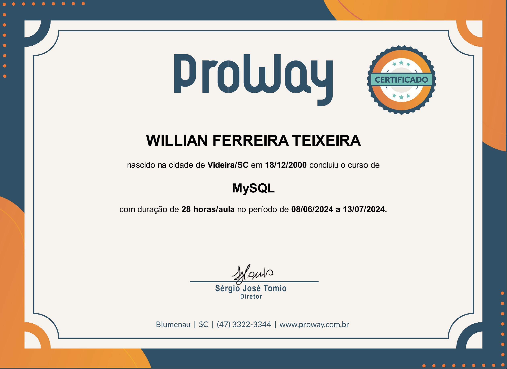
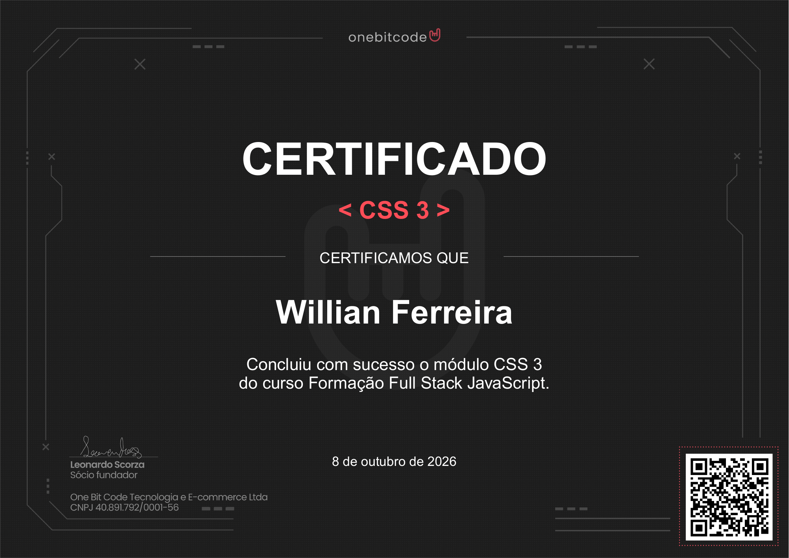
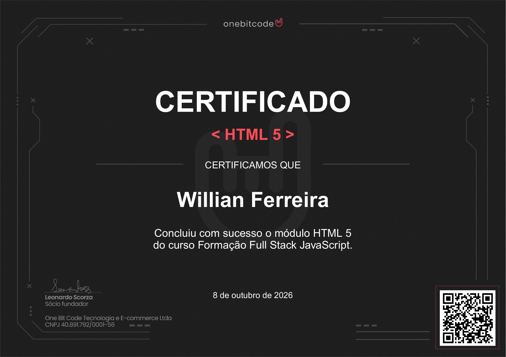
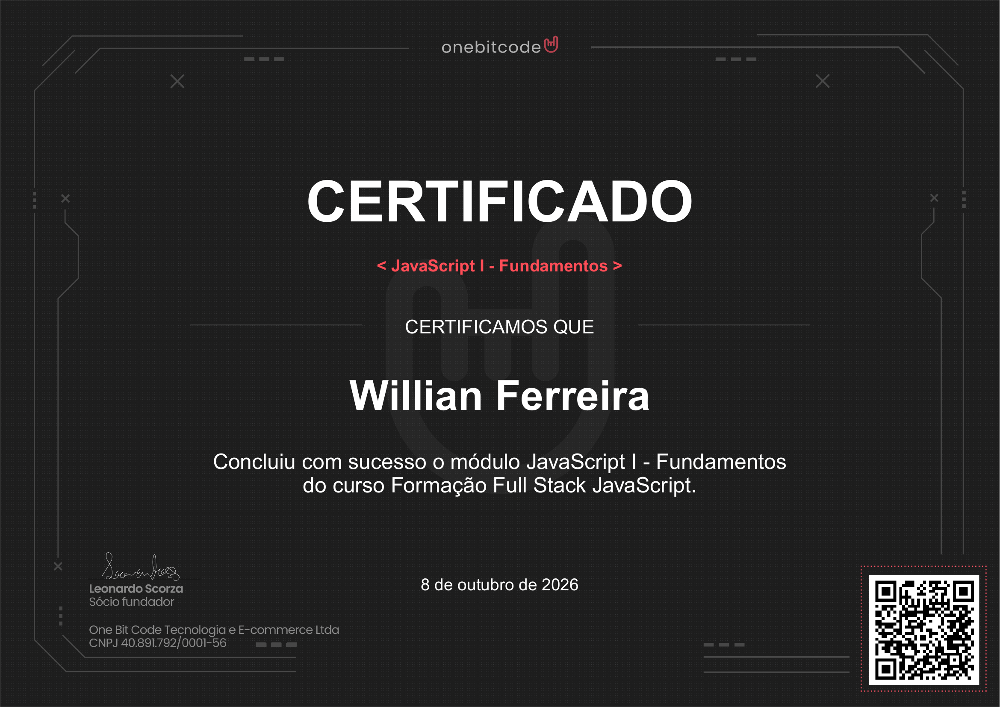
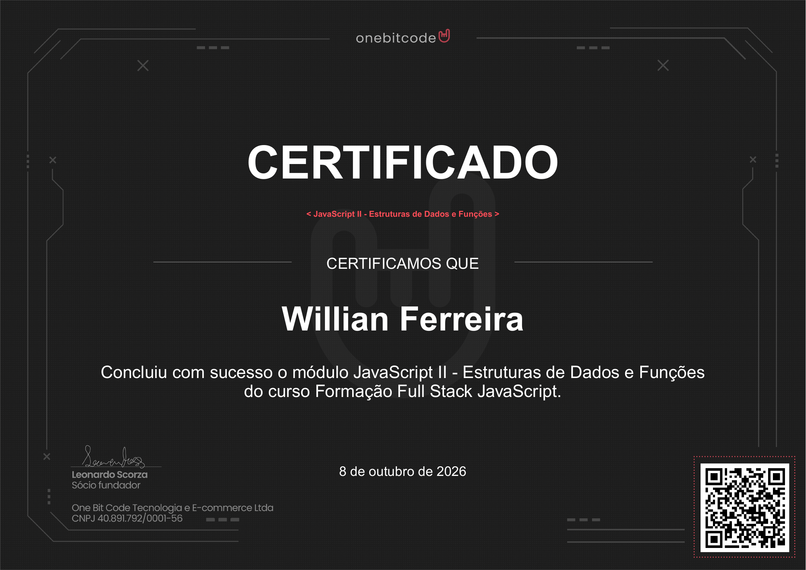
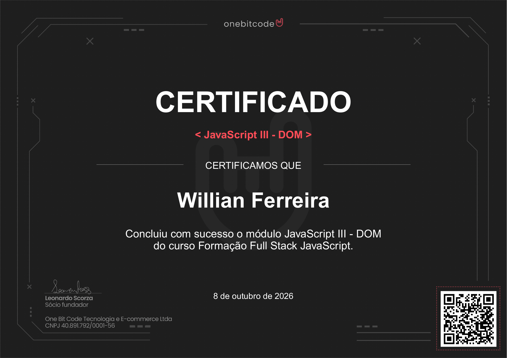
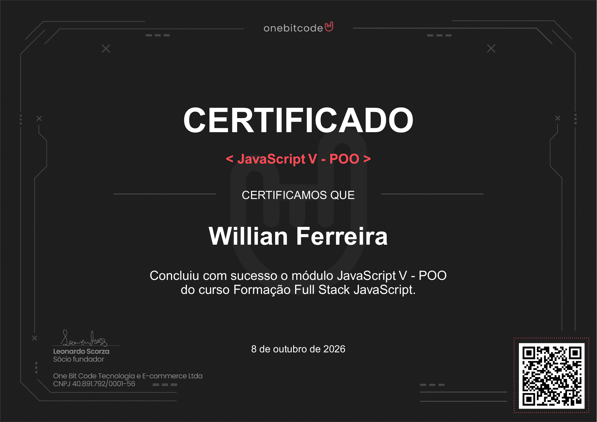
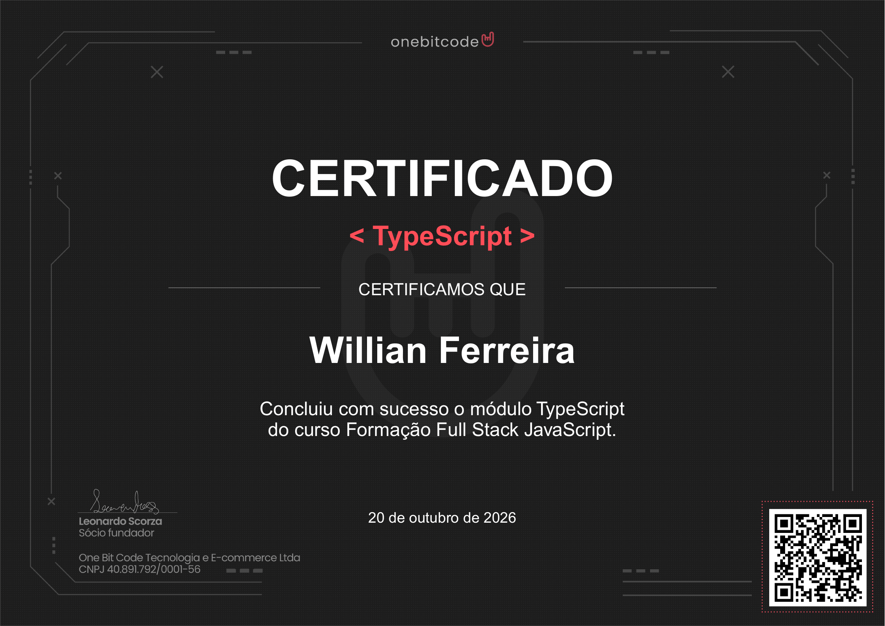
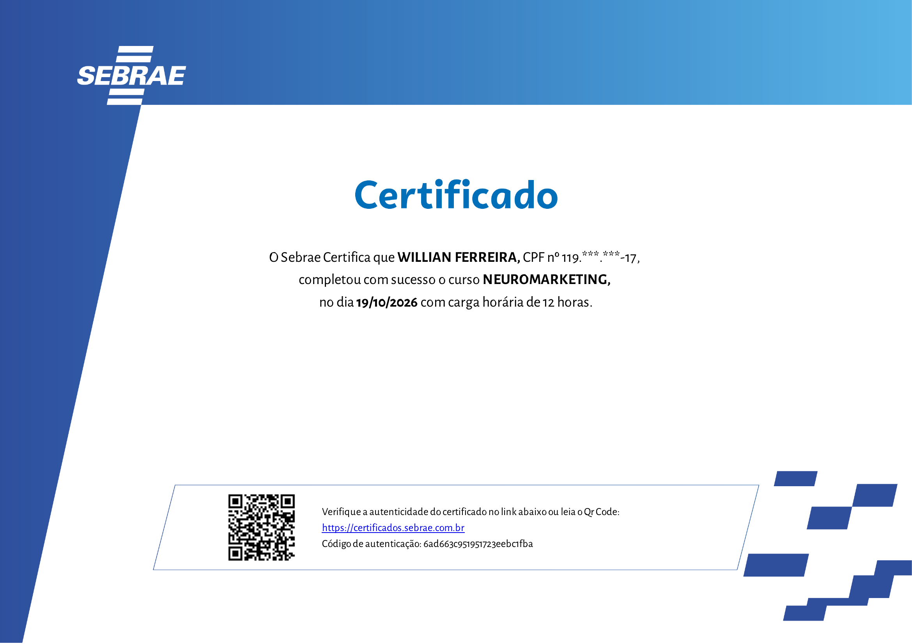

Formação Full Stack JavaScript
Desenvolvimento webVer certificado ↗
Cada curso é mais um passo na minha formação. Aqui reúno meus certificados em tecnologia, negócios e melhoria de processos.
Exibindo 35 certificados



















Tente outro curso, instituição ou área de conhecimento.